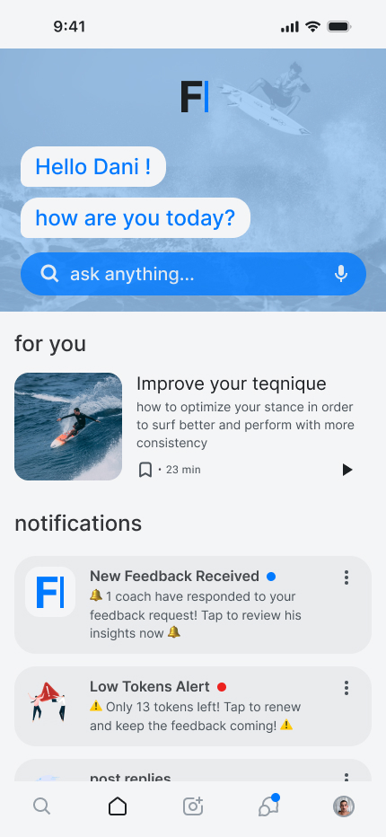
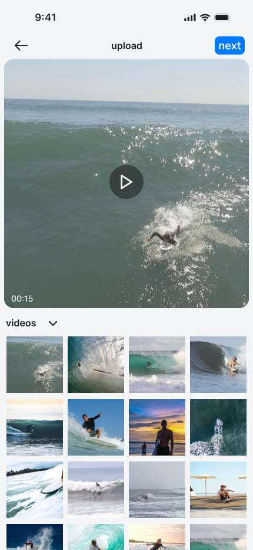
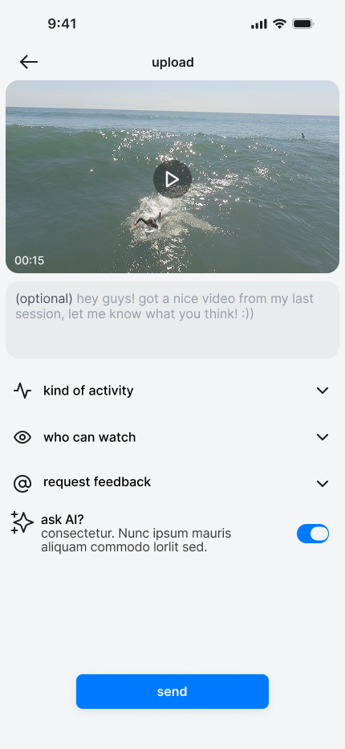
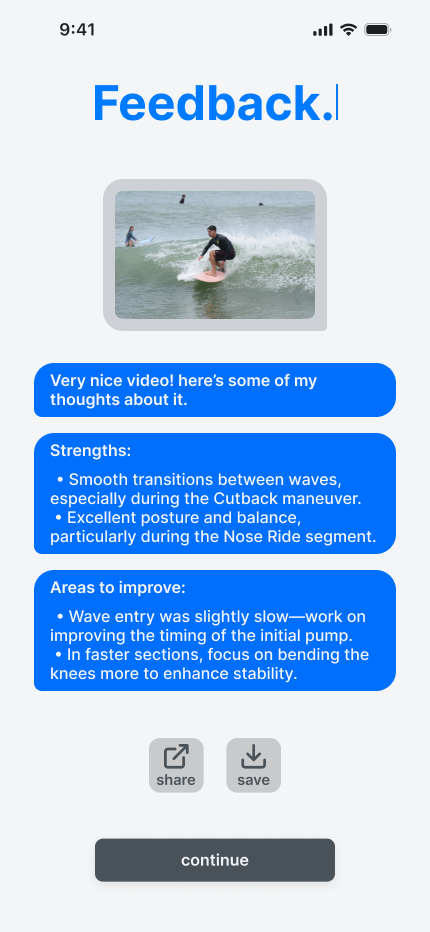
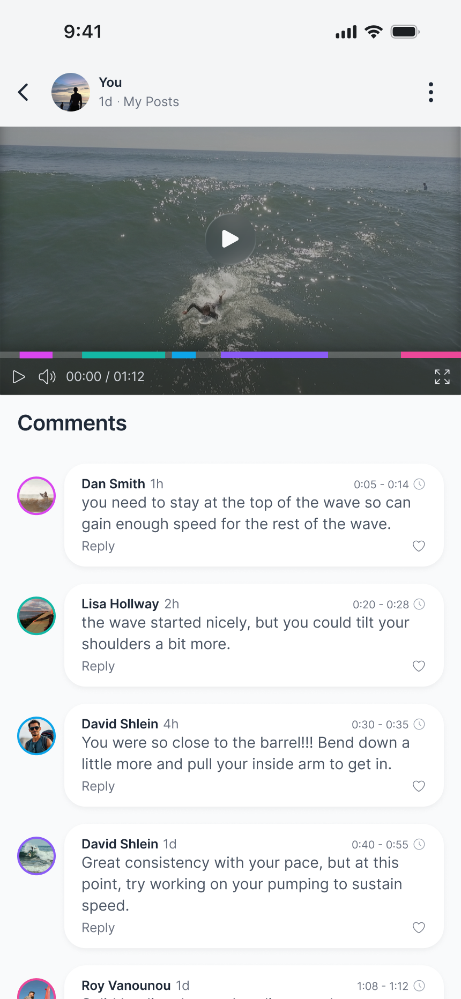
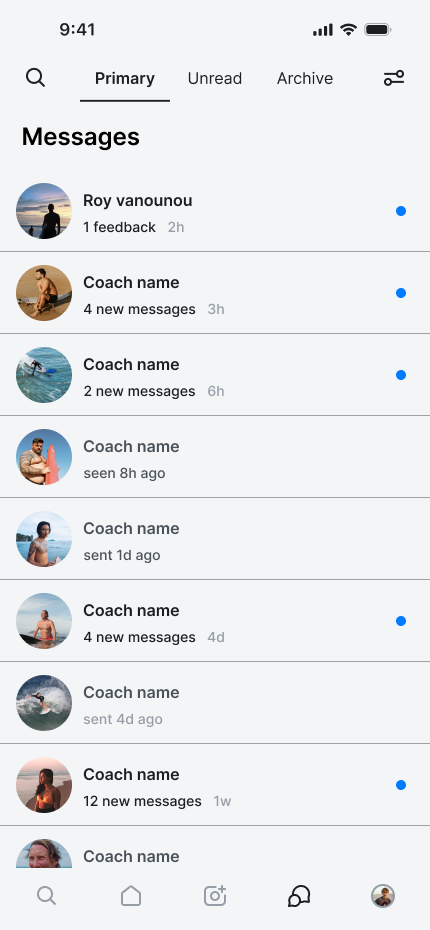
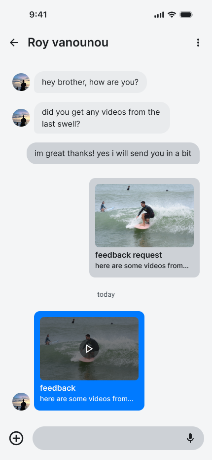
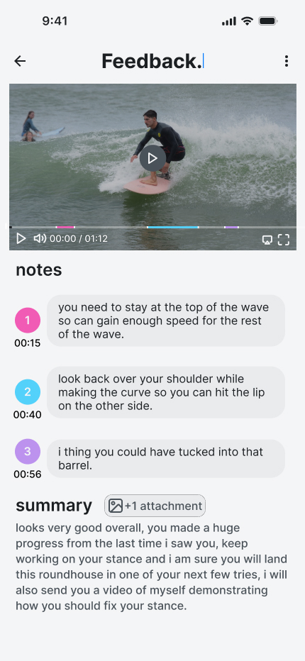

Feedback - Sports Coaching Platform
- Context
- Studio Six B
- Type
- Concept · End-to-end Design
- Platform
- Mobile
Feedback is a coaching app that lets athletes get timestamped, frame-accurate critique from AI, community, or a professional coach: asynchronously, with no scheduling required. Designed end-to-end as a concept project at Studio Six B.
The Product
One upload. Three feedback channels.
Access to quality coaching is limited by time zones, scheduling, and cost. Feedback is designed around a different model: upload once, receive critique at the frame level from three independent channels, on your own schedule. No session booking, no waiting for a reply window, no geographic constraint.
The core mechanic is the same across all three channels: feedback is anchored to specific moments in the footage, not delivered as a general impression.

Submit a Performance
Select, configure, send.
Athletes pick a clip from their camera roll, describe the context: sport, level, what they want feedback on — and choose how to receive it: publicly from the community, privately from a coach, or immediately from AI. Each path starts from the same upload, but leads to a different feedback experience.


AI Feedback
Feedback before anyone else has seen it
When an athlete enables AI analysis, structured feedback arrives the moment the upload completes — no waiting for a coach to respond, no waiting for the community to engage. The analysis identifies specific strengths and technique improvements, each pinned to the exact moment in the footage where they occur.
- Arrives the moment the upload completes, no scheduling required
- No coach required, no additional cost
- Feedback anchored to specific moments, not general impressions
- Works standalone or alongside community and coach reviews

Community Feedback
Not a comment section. A critique tool.
Athletes can publish a clip to the community and receive feedback from other athletes and coaches. What makes this different from a social feed is how the feedback is structured: every comment is timestamped and anchored to a specific frame in the video.
Scrubbing through the footage surfaces comments exactly where they apply. Multiple reviewers annotate independently, and the result is a composite critique across perspectives, not a stream of generic reactions.
- Comments anchored to specific frames, not the video in general
- Multiple reviewers, each annotating independently
- Coaches and athletes participate in the same community layer

Professional Coaching
A real coaching session, delivered asynchronously
Athletes initiate a review through a direct message: no forms, no booking flow. The coach receives it as a structured feedback request and responds on their own schedule. The review interface lets coaches annotate directly on the timeline, numbered and timestamped at specific frames, with the option to attach reference images or demo clips.
The athlete receives the full breakdown: every note in context on the video timeline, plus a written summary.



Why Async
As someone who has surfed for 18 years and previously worked as a coach, I understood the problem from the inside. That background shaped the core product decision: useful sports feedback usually depends on reviewing recorded movement, not talking through it in the moment.
Athletes train, record, and review. The critique that actually changes technique is tied to a specific frame - a body position, a transition point, a mistake that happens in under a second. Asynchronous feedback supports that process directly: an athlete uploads footage, a coach or the AI responds with notes pinned to the exact moment, and the athlete can review it as many times as they need.
The design challenge was building a platform around that model in a way that felt structured without being rigid. Three feedback channels - AI, community, and coach - each serving a different need, all anchored to the same footage and the same moment.